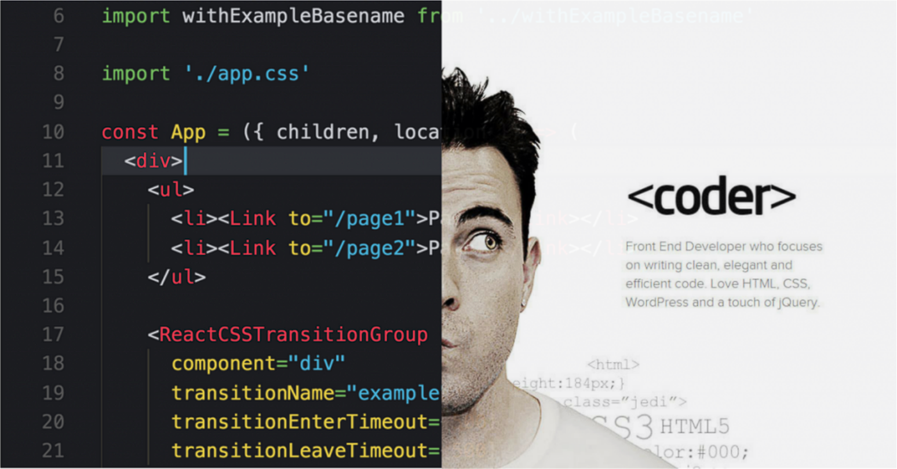
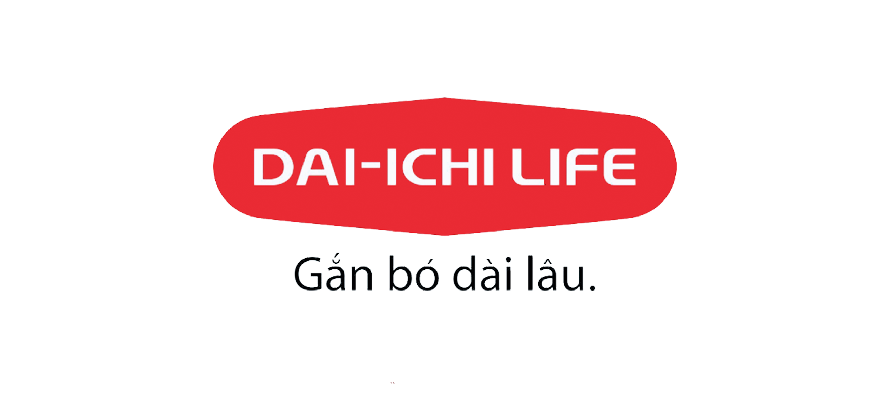
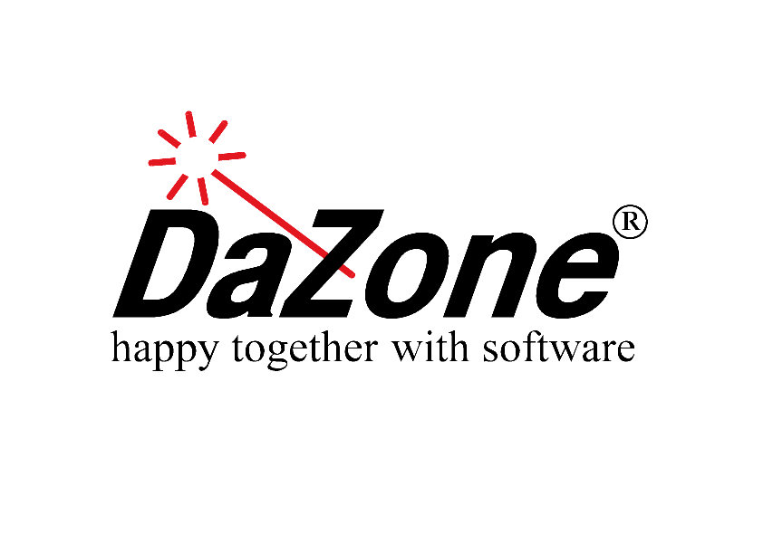
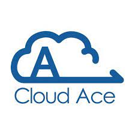
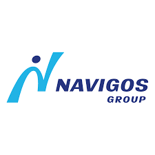

14/05/2018 | 2,580 views

Việc tạo ra một portfolio - một tuyển tập những công việc mà bạn đã làm - là điều hết sức quan trọng. Nhiều nhà tuyển dụng sẽ xem xét portfolio trước khi quan tâm
đến việc bạn có phù hợp với công việc hay không. Hãy dành một lượng thời gian thích hợp để xây dựng riêng cho mình một portfolio thật ấn tượng với nhà tuyển
dụng – nó sẽ thực sự đáng giá đấy.
Việc tạo ra một portfolio - một tuyển tập những công việc mà bạn đã làm - là điều hết sức quan trọng. Nhiều nhà tuyển dụng sẽ xem xét portfolio trước khi quan tâm
đến việc bạn có phù hợp với công việc hay không. Hãy dành một lượng thời gian thích hợp để xây dựng riêng cho mình một portfolio thật ấn tượng với nhà tuyển
dụng – nó sẽ thực sự đáng giá đấy.
Khi tôi phỏng vấn các lập trình viên, họ hiếm khi đem các sản phẩm hay dự án nào từ công việc của mình ra trình bày. Điều này làm tôi cảm thấy khó xử. Tôi thấy ai
cũng sử dụng những mẫu hồ sơ làm sẵn giống hệt nhau, với đầy rẫy những câu chữ hào nhoáng. Nào là sáng lập, chiến lược, kiến trúc blah blah. Thực chất, việc
trình bày sản phẩm cụ thể sẽ mang lại kết quả hấp dẫn hơn rất nhiều.
Đừng chỉ gật gù với điều tôi vừa nói, hãy áp dụng chúng ngay cho bản thân bạn. Sau đây là một vài mẫu portfolio để bạn tham khảo:
Bạn không nhất thiết phải phát triển một ứng dụng hoặc một trang web hoành tráng nào đó thì mới liệt kê nó vào portfolio của mình. Là một người trong ngành, tôi
có thể đánh giá được vẻ đẹp của một ứng dụng console được thiết kế tốt, hoặc một applet thông minh mà hầu như không có bất kỳ một interface nào. Nếu bạn đã
viết ra những đoạn code mà bạn đặc biệt cảm thấy hãnh diện vì nó, hãy để nhà tuyển dụng được thấy chúng.
Portfolio rất quan trọng, nhưng điều quan trọng hơn đó là bạn phải cảm thấy hào hứng về cái mà bạn đã làm. Hãy dành thời gian để làm nổi bật những thứ hay ho
đó và mang chúng theo trong buổi phỏng vấn tuyển dụng. Điều đó sẽ giúp bạn có lợi thế hơn hẳn so với tất cả những ứng viên khác mà tôi đã từng phỏng vấn.
Trên tất cả, nếu bạn có thể truyền đạt một cách hiệu quả và chính xác với tôi về những điều thú vị và thách thức trong những dự án trước đây của mình, thì vâng –
chú hãy về đội của anh. Hoặc ít ra thì, chúng ta hãy làm việc cùng nhau để xây dựng nên một cái gì đó thật tuyệt vời.
Theo Lập trình & Cuộc sống
1. 
Hồ Chí Minh
Thương lượng
2. 
Hồ Chí Minh
$500 - $2,500
3. 
Hà Nội | Hồ Chí Minh
$500 - $1,500
4. 
Hồ Chí Minh
Thương lượng
5.
Hà Nội
Thương lượng
| Việc làm theo Kỹ Năng | Việc làm theo Chức Vụ | Việc làm theo Công Ty | Việc làm theo Địa Điểm |
|---|---|---|---|
| Việc làm Java | Project Manager | FPT Software | Hồ Chí Minh |
| Việc làm PHP | Tester QA QC | Evolable Asia | Hà Nội |
| Việc làm MySQL | Senior Developer | Fossil | Đà Nẵng |
| Việc làm Android | Software Engineer | Axon Active | |
| Việc làm iOS | KMS Technology |
Copyright © 2020
Học, học nữa, học mãi. — Lê-nin
UIT — KP6, Linh Trung, Thủ Đức, HCM.